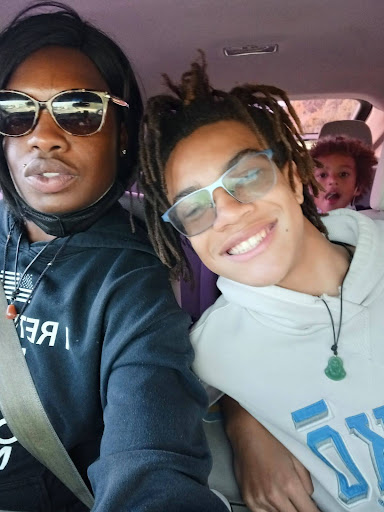

BamJam
Who am I
Hey, my name is Jayden Moffit. I'm an avid runner, and gamer. I used to do wrestling, but as of now I'm varsity for cross country, and track. My hobbies include reading, running, gaming, listening to music, and eating different foods.
Favorite animal

My favorite animal is a cheeetah
My Family
I have 3 half brothers yet I only live with one of the, and my mom.